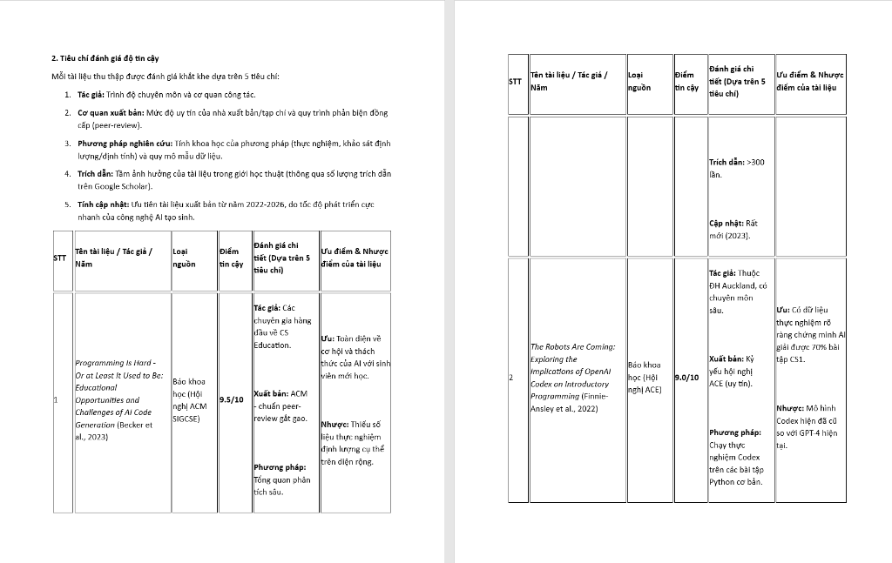
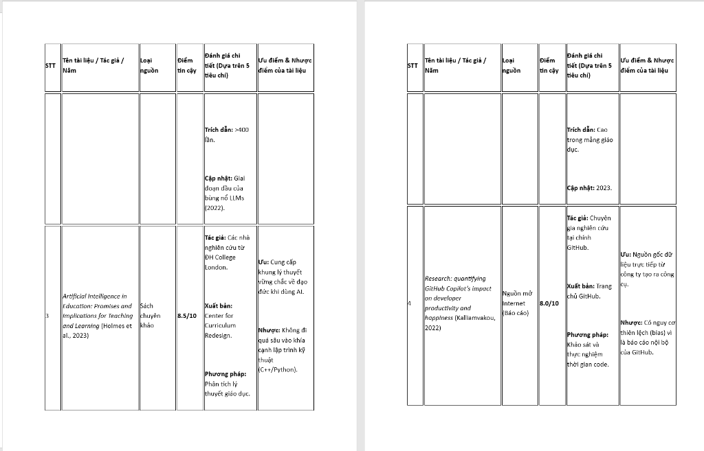
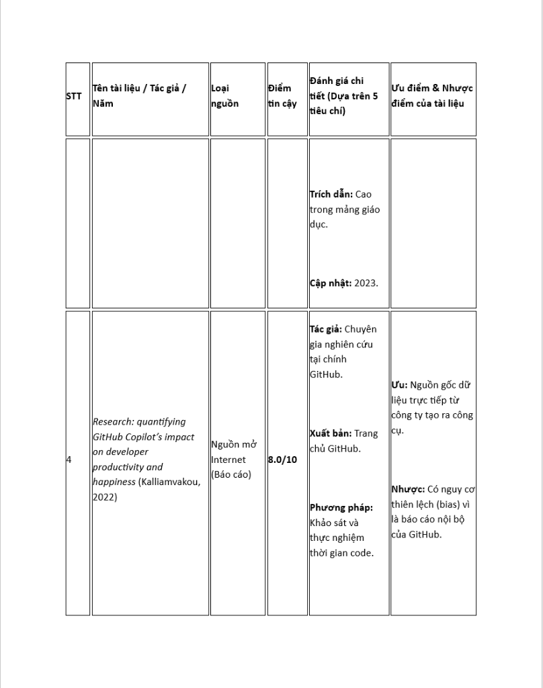

Bài tập 2 trình bày các tiêu chí đánh giá độ tin cậy của tài liệu khoa học và phân tích chi tiết các nguồn dữ liệu thu thập được.
Mỗi tài liệu thu thập được đánh giá khắt khe dựa trên 5 tiêu chí sau đây:
| STT | Tên tài liệu / Tác giả / Năm | Loại nguồn | Điểm tin cậy | Đánh giá chi tiết (Dựa trên 5 tiêu chí) | Ưu điểm & Nhược điểm |
|---|---|---|---|---|---|
| 1 | Programming Is Hard - Or at Least It Used to Be: Educational Opportunities and Challenges of AI Code Generation (Becker et al., 2023) |
Báo khoa học (Hội nghị ACM SIGCSE) | 9.5/10 |
|
|
| 2 | The Robots Are Coming: Exploring the Implications of OpenAI Codex on Introductory Programming (Finnie-Ansley et al., 2022) |
Báo khoa học (Hội nghị ACE) | 9.0/10 |
|
|
| 3 | Artificial Intelligence in Education: Promises and Implications for Teaching and Learning (Holmes et al., 2023) |
Sách chuyên khảo | 8.5/10 |
|
|
| 4 | Research: quantifying GitHub Copilot's impact on developer productivity and happiness (Kalliamvakou, 2022) |
Nguồn mở Internet (Báo cáo) | 8.0/10 |
|
|
Dưới đây là các hình ảnh trích xuất từ báo cáo gốc thể hiện bảng đánh giá trên:


